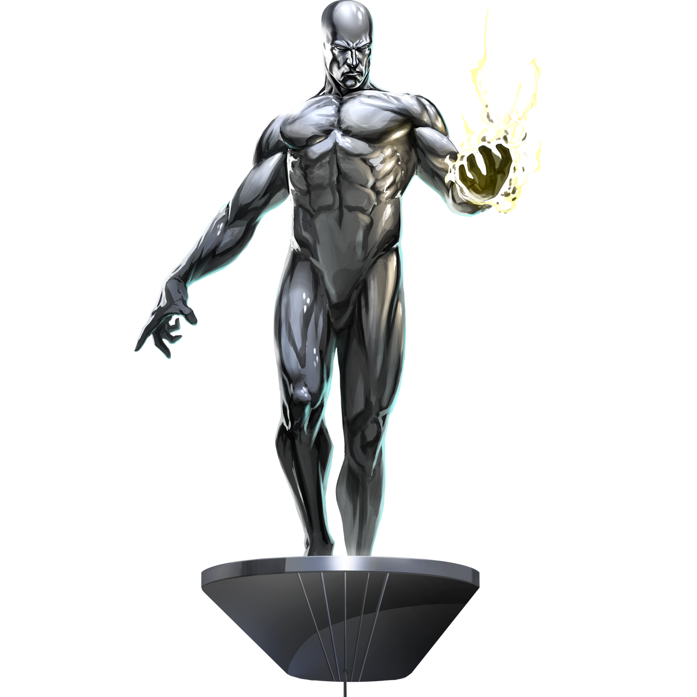

Silver Surfer, also known as Norrin Radd, is a fictional superhero in Marvel Comics. He was created by writer Stan Lee and artist Jack Kirby, first appearing in Fantastic Four #48 in 1966. Norrin Radd was a young astronomer on the planet Zenn-La, which was destroyed by the cosmic entity Galactus. To save his world, Norrin became Galactus' herald, the Silver Surfer, and was imbued with a portion of the Power Cosmic. His silver, metallic skin and ability to travel faster than light on his surfboard-like craft make him a distinctive character in the Marvel Universe.
The Silver Surfer is one of the most powerful beings in the Marvel Universe due to his mastery of the Power Cosmic. This energy grants him a vast range of abilities, such as superhuman strength, invulnerability, energy manipulation, and the ability to heal himself. Additionally, he can fly at faster-than-light speeds and is capable of surviving in the vacuum of space. His vast knowledge of the cosmos and his heightened intellect make him not only a formidable fighter but also an insightful strategist. These powers, combined with his inherent compassion and sense of justice, elevate him to a level of heroism and capability far beyond most other superheroes.
